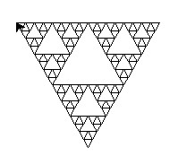
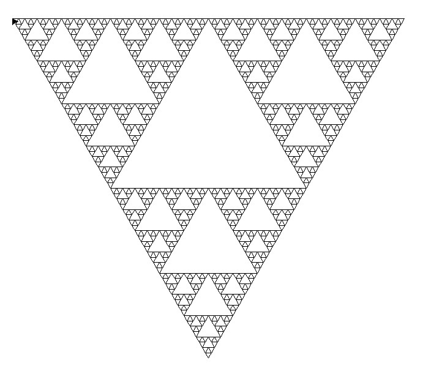

Le but de ce projet est de créer un programme permettant de tracer des triangles dans des triangles afin de retrouver ce motif :


Ici on a choisis niter égal à 4. Voici un exemple avec niter égal à 6 :
Ce projet ne m'a pas posé beaucoup de problèmes, je l'ai réaliser en créant d'abord une règle permettant de remplacer une lettre par une chaine d'action à réaliser puis j'ai créé une fonction qui trace une courbe en fonction d'un motif initialisé et la régle précédente. Puis j'ai crée une 3ème fonction afin de tracer le motif voulu en fonction de niter et du motif initiale. Voici mon programme : TP_projet_Sierpinski